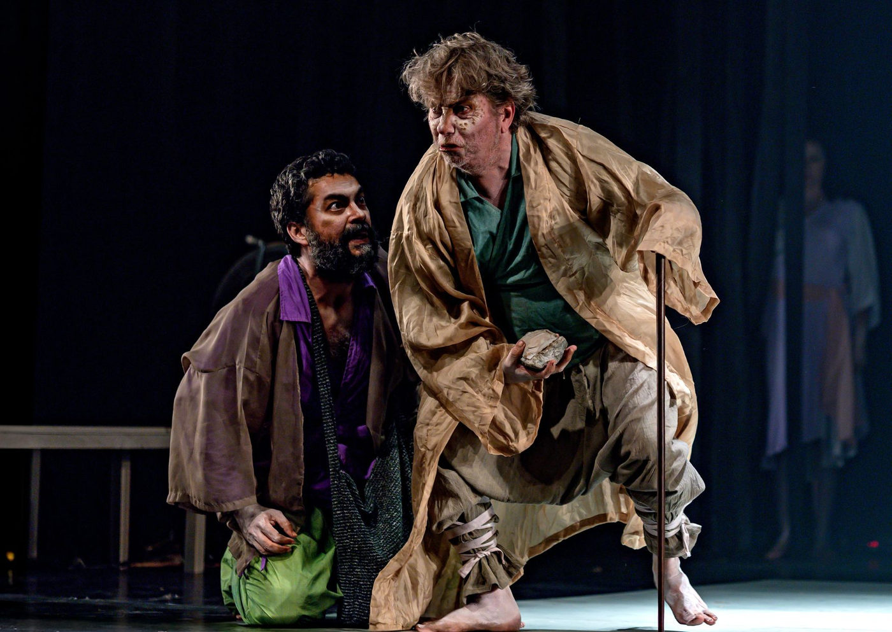

Espetáculo "O Ninho, um recado da raiz" retorna a São Paulo para temporada gratuita no Itaú Cultural

Dirigida e escrita por Newton Moreno, a peça traz trilha sonora original de Zeca Baleiro e aborda a intolerância e o neonazismo no Brasil
Após uma estreia marcante em 2024, o espetáculo "O Ninho, um recado da raiz", dirigido e escrito por Newton Moreno, retorna para nova temporada gratuita no Itaú Cultural, de 6 a 23 de fevereiro de 2025. Com apresentações de quinta a sábado, às 20h, e aos domingos, às 19h, a montagem propõe uma reflexão profunda sobre intolerância, ódio e heranças fascistas em terras brasileiras, com uma trama ambientada nos canaviais nordestinos.
O projeto, que estreou no Sesc Bom Retiro, marca a parceria de Moreno com o produtor Rodrigo Velloni, repetindo o sucesso da montagem "As Cangaceiras, Guerreiras do Sertão" (2019). A peça traz trilha sonora original composta por Zeca Baleiro, que também divide a direção musical com André Bedurê.
Uma narrativa sobre identidade, herança e violência
O texto de Newton Moreno surgiu em 2009, quando a Cia. Os Fofos Encenam pesquisava a civilização da cana-de-açúcar e a influência do patriarcado feudalista no Nordeste para a criação da peça "Memória da Cana". Durante a pesquisa, o autor encontrou documentos históricos que revelavam a presença de células nazistas em uma cidade próxima a Recife, onde famílias influentes apoiaram e abrigaram nazistas refugiados no Brasil.
A peça acompanha a trajetória de um jovem em busca de sua origem, que descobre segredos sombrios sobre sua família. Alertado sobre os perigos de sua investigação, ele persiste até compreender que descobrir a verdade pode ser um processo doloroso.
Para Moreno, a retomada da obra é uma resposta à ascensão da extrema direita ultraconservadora e do neonazismo no Brasil e no mundo.
“Pesquisas, como as da saudosa Adriana Dias, revelam como o neonazismo ainda está presente no Brasil. Esta peça investiga por que, até hoje, convivemos com ideias fascistas e como essa herança se perpetua”, afirma o autor.
Encenação e elenco
A montagem tem uma abordagem intimista e intensa, com um tripé narrativo baseado no texto, na atuação e na música ao vivo. No elenco, estão Paulo de Pontes, Tay Lopes, Kátia Daher, Badu Morais, Rebeca Jamir e Jorge de Paula, além dos músicos Bella Raiane e Zeca Loureiro.
“O espetáculo propõe um jogo entre esses três elementos, criando uma experiência teatral profunda. A música não é apenas um complemento, mas parte integrante da narrativa”, explica Newton Moreno.
Bate-papo com o elenco e historiadora Susan Lewis
Além da temporada, no dia 15 de fevereiro, às 15h, será realizado um bate-papo especial com o autor, elenco e a historiadora Susan Lewis, especialista na pesquisa sobre a presença nazista no Brasil e nas Américas.
Serviço – "O Ninho, um recado da raiz"
📍 Local: Itaú Cultural
📍 Endereço: Av. Paulista, 149 - Bela Vista, São Paulo - SP
📅 Temporada: 6 a 23 de fevereiro de 2025
🎭 Sessões:
Quintas a sábados: 20h
Domingos: 19h
Bate-papo com o elenco e Susan Lewis: 15 de fevereiro, às 15h
⏳ Duração: 90 minutos
🎟 Ingressos: Gratuitos, disponíveis pelo site do Itaú Cultural (www.itaucultural.org.br) ou na bilheteria do teatro, liberados 1h antes de cada sessão.
🔞 Classificação: 14 anos
♿ Acessibilidade: Teatro acessível a cadeirantes e pessoas com mobilidade reduzida. Algumas sessões contarão com interpretação em Libras.
Por que assistir?
Com um enredo impactante e necessário, "O Ninho, um recado da raiz" investiga as raízes da intolerância e do fascismo no Brasil, levando o público a refletir sobre o presente e o futuro do país. Um espetáculo urgente e essencial para os tempos atuais.